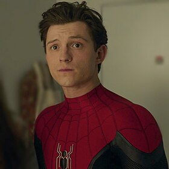
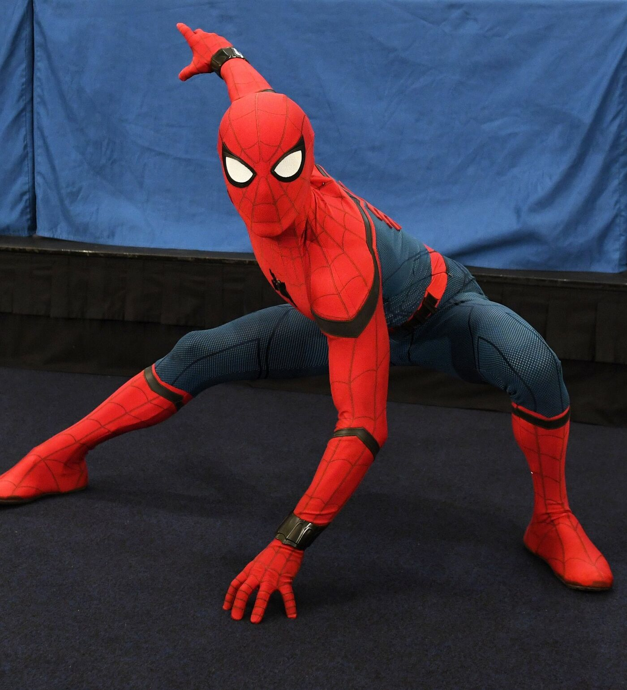

Пи́тер Па́ркер (англ. Peter Parker), также известный как Челове́к-пау́к (англ. Spider-Man) — персонаж медиафраншизы «Кинематографическая вселенная Marvel» (КВМ), основанный на одноимённом супергерое Marvel ComicsЧеловек-паук - это популярный комиксовый супергерой, созданный Стэном Ли и Стивом Дитко. Он обладает способностью к лазанию по стенам и использованию паутинных снарядов.
Пи́тер Па́ркер (англ. Peter Parker)

История Питера Паркера
Питер Паркер родился 10 августа 2001 года в Форест-Хилc, Куинс[a]. Большую часть своей жизни он воспитывался своим дядей Беном Паркером и тётей Мэй Паркер после смерти его родителей. В 2011 году на выставке «Старк Экспо», Паркер подвергается нападению дрона, но в итоге его спасает Железный человек.
Бен позже умер при неизвестных обстоятельствах, что в первую очередь является причиной того, что Питер не решается раскрыть Мэй свой секрет Человека-паука.

Питер Паркер в костюме Человек-паука
Паутина(Веб-Шутеры)
В ранних версиях Человек-паук выпускал паутину специальными веб-шутерами. Впоследствии (в событии «Человек-паук: Другой») он получил способность выпускать органическую паутину без использования каких-либо приспособлений. При нажатии пальцами на центр ладони он открывает поры на запястьях и выпускает паутину, которая по силе превосходит искусственную[83]. Через определённое время данная способность была им утрачена, и он вновь вернулся к веб-шутерам, какими и пользуется до сих пор.
Костюмы и снаряжение
Несмотря на ограниченные финансовые средства, Человек-паук использует специальное оборудование. Способность стрелять паутиной — одна из отличительных черт персонажа. Первоначально у него не было физиологических изменений, позволяющих выпускать паутину, и он пользовался приборами собственного изобретения, закреплёнными на запястьях. На ладонях находился спусковой механизм, который срабатывал при сжатии руки в кулак[88]. Впоследствии они были несколько раз улучшены, в частности, увеличена скорость выпуска паутины, точность и технологические характеристики. Позже, пользуясь своими навыками в прикладных науках, Питер разработал синтетический клей-полимер, сходный по свойствам с паутиной, и пользовался им в комплекте с пускателями. Прочность на разрыв создаваемой «паутины» эквивалентна 120 фунтам (54 кг) на квадратный миллиметр сечения[89] и сравнима с прочностью нейлона, а также настолько крепка, чтобы связать и удержать Халка[90]. Недостаток изобретения в том, что через некоторое время нити разрушаются, теряют силу и в результате испаряются.
Костюмы Человека-паука за всю историю его существования менялись множество раз[91], но самыми примечательными являются пять из них — традиционный красно-синий, чёрно-белый костюм-симбиот во время событий Тайных войн[92](позже он не раз надевал этот костюм, но уже из обычной ткани), алый костюм Бена Райлли, чёрно-красный костюм Отто Октавиуса и технологически продвинутый костюм-броня, разработанный Тони Старком[93][94]